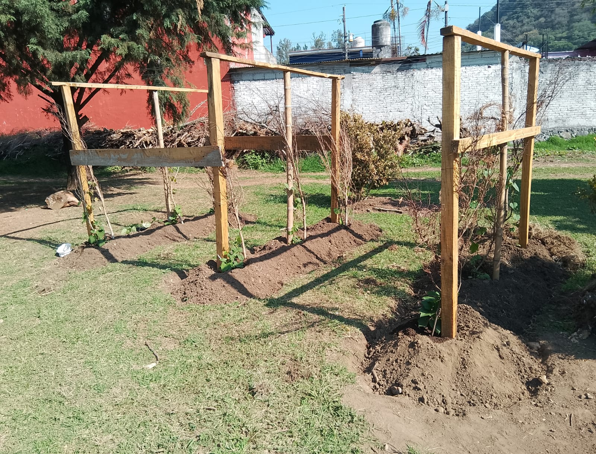

Objetivo del Proyecto
Crear un huerto de chayote como proyecto transversal del MCCEMS, buscando integrar el aprendizaje en diversas áreas, desarrollar competencias clave en los estudiantes, fomentar la conciencia ambiental y social, y ofrecer beneficios prácticos a la comunidad educativa, todo ello en el contexto específico de la riqueza agrícola y cultural de la región veracruzana.
Justificación y Antecedentes
Que el plantel sirva como un espacio donde los estudiantes puedan aplicar conocimientos de diversas disciplinas como Interacción de la energía y dinámica en los ecosistemas (botánica, ecología), Interacción social II (origen del chayote, su importancia cultural y económica en la región), Interacción activa en inglés (elaboración de informes en inglés).
Promover la comprensión de los ciclos naturales, la importancia de la biodiversidad, las prácticas de agricultura sostenible (uso de abonos orgánicos, manejo del agua), y la reducción del impacto ambiental asociado al consumo de alimentos. Adquiriendo habilidades básicas de cultivo, cuidado de plantas, manejo de herramientas, y posiblemente, procesamiento y conservación del chayote, que pueden ser útiles para la vida diaria y futuras oportunidades laborales o de emprendimiento.
Productos y Servicios
Huerto de Chayote
Un espacio educativo sustentable para el aprendizaje integral
Descargar Proyecto